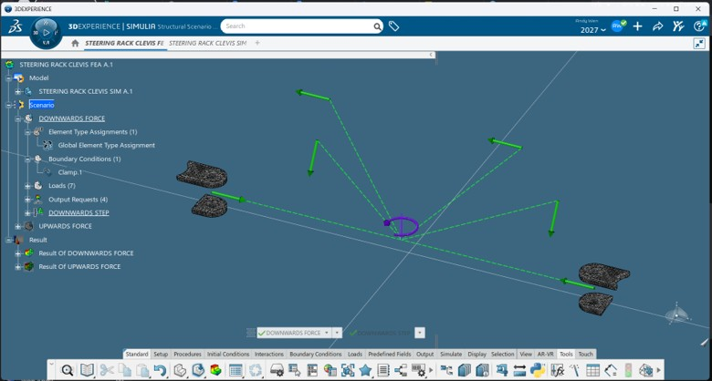
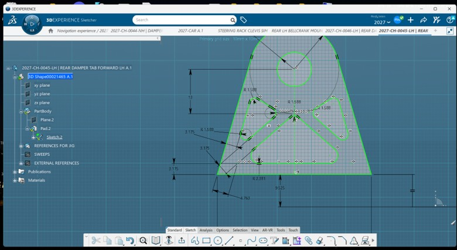
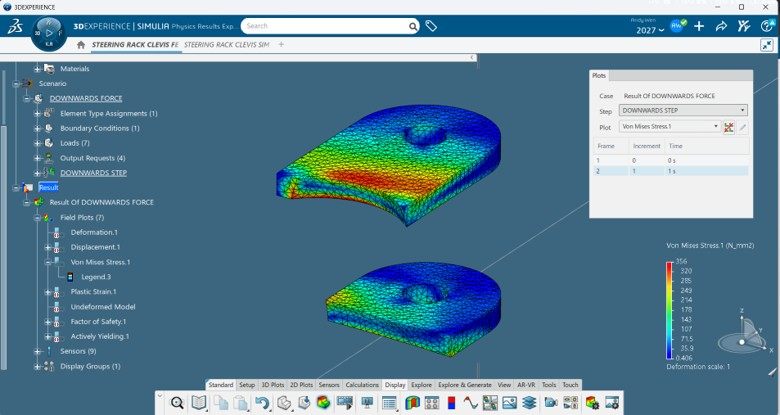
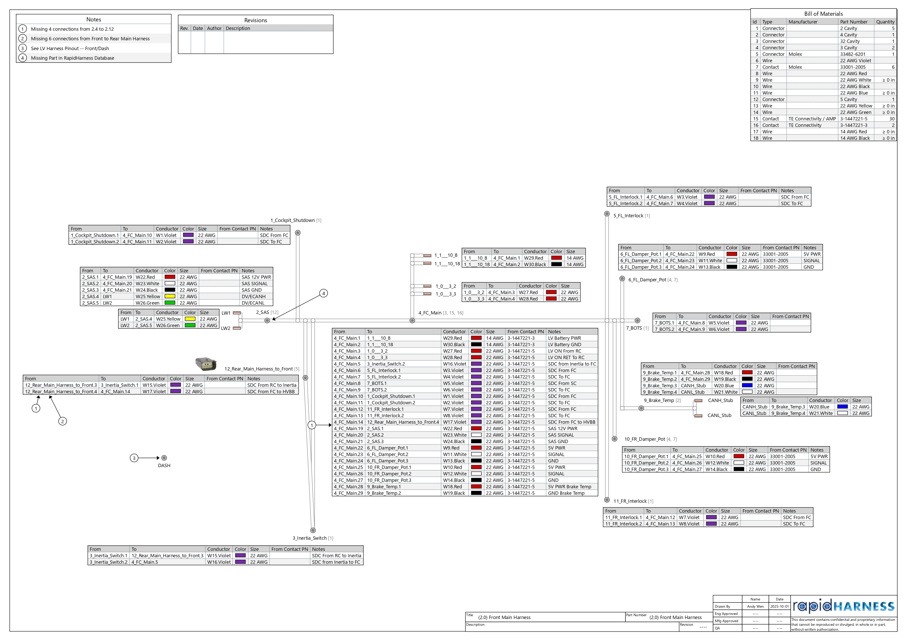

Oct 2025 – Present · University of Toronto Formula Racing
FSAE Chassis FEA & Electrical Harnessing
Structural finite element optimization of bellcrank mount tabs & steering rack tabs, parametric chassis wireframe automation, and FSAE-compliant front main wire harness integration.

Key Specifications
| CAD & FEA Environment | 3DX CATIA (Generative Shape Design, Structural Model Creation, Structural Scenario Creation) |
|---|---|
| Parts Modeled | 1020 Steel Bellcrank Mount Tabs & Steering Rack Mount Tabs |
| Mesh Refinement | 1 mm tab mesh (0.5 mm around bolt holes), ≥4 elements through thickness |
| Electrical Tools | RapidHarness |
Chassis Subteam: CHassis Mount Tab Optimization
Suspension pushrod/pullrod loads transfer directly into the chassis through welded 1020 steel bellcrank tabs. Using 3DX CATIA, I built a coupled finite element model incorporating the mounting tabs and remote pushrod load couplings across peak impulse, roll, and heave load cases. I repeated this process for the steering rack tabs supporting the steering rack clevis.
- Iterative Designing: Progressed through 7+ simulation revisions cycles, each time noting down max Von Mises stress, Factor of Safety, and part mass to obtimize/pocket or strengthen as needed.
- Parametric Wireframe Automation: Implemented CATIA Design Tables to drive 50+ structural chassis wireframe coordinates, cutting geometry update turnaround times between chassis and suspension subteams.
- Physical Validation: Machined torsional test rig fixtures to empirically measure previous-year chassis torsional stiffness and validate load case calculations.
Electrical Subteam: Front Main Harness
Prior to joining the Chassis subteam, I authored complete electrical schematics and physical routing drawings for the vehicle's front main harness in RapidHarness, followed by hands-on wire preparation, terminal crimping, and connector assembly compliant with FSAE rules.


